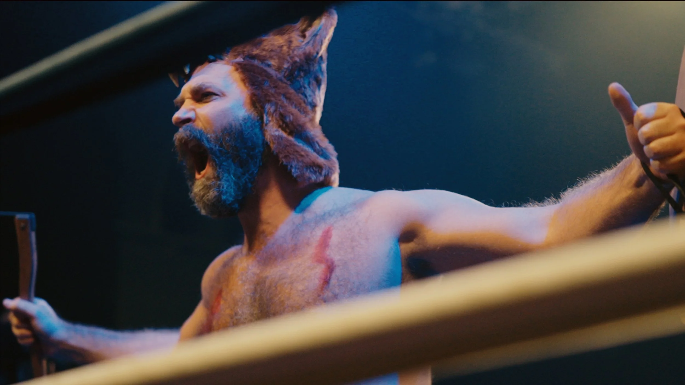

Nominated★★★★★The Guardian
Nominated★★★★★The Guardian“The joyful return of this school show is just the blast of optimism we need.”
Channel 4
Educating Yorkshire, Series 2

 Nominated
NominatedApple TV+
Spartan Bare Knuckle: The Real Life Fight Club

★★★★The Times
“An extremely well-crafted crime documentary; a thoroughbred of the genre.”
BBC One
Murder 24/7
BBC Two
Emergency 24/7
 Nominated★★★★★The Telegraph
Nominated★★★★★The Telegraph“Truly transformational TV... the most entertaining, touching series you'll watch this year.”
BBC One
Freddie Flintoff's Field of Dreams: On Tour
Winner★★★★The Telegraph
“All human life was here: birth, death and resurrection in the space of just two shifts.”
BBC One
Ambulance
Channel 4
Emergency

Disney+ / Hulu
Jamie and Sophie: Raising Chelsea

BBC Three
Cherry Valentine: Gypsy Queen and Proud

BBC One
Freddie Flintoff's Field of Dreams, Series 2
